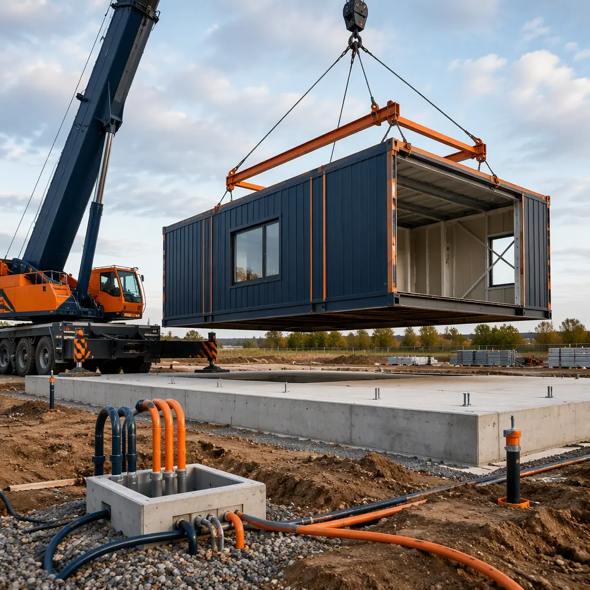

Modular construction is fast — but only when it is scheduled correctly. The conventional industry narrative is that prefabricated buildings arrive "40% faster," and that is true when factory production runs in parallel with site work. The failure mode, however, is a developer who treats a modular project like a stick-built project with better materials: they wait for design freeze, then ask the factory for slots, then start site work — and discover the factory is booked out 14–20 weeks while the site sits idle. Scheduling modular construction is a different discipline from scheduling traditional delivery: it is driven by fixed production slots, engineering release milestones, and a critical path that runs through the factory, not the field. This guide covers how to build a modular project schedule that actually delivers the speed advantage — from booking capacity to final commissioning. For a phase-by-phase breakdown of how long each stage takes, see our modular construction project timeline guide.
Why Modular Scheduling Inverts the Traditional Critical Path
In stick-built delivery, the critical path runs through the field: foundations, structure, enclosure, MEP rough-in, finishes. Weather, labor availability, and subcontractor sequencing all push against a schedule that is mostly outside the owner's control. Modular delivery moves the structural, enclosure, and MEP-heavy work into a climate-controlled factory, which changes the schedule in three structural ways:
- The factory becomes a fixed constraint. A production line has finite capacity — typically 40–60 modules per week for a mid-size plant — and slots are allocated weeks in advance. Missing your production window means waiting for the next one, so the factory booking date becomes the single most important date in the project schedule. The capacity-planning logic parallels what we document in modular factory quality control systems.
- Design and engineering must freeze early. Modules are manufactured to precise dimensions; a late architectural change after steel fabrication begins is expensive or impossible. Engineering release milestones — typically 8–14 weeks before production starts — replace the field's tolerance for late decisions. Procurement sequencing for this early-freeze model is covered in our modular RFP and procurement guide.
- Site work is decoupled but not independent. Foundations, utility connections, and crane access must be ready when modules arrive, but they no longer dictate when the building gets built — they dictate when it can be set. The foundation schedule is critical because a module cannot be set on an unfinished slab; see modular building foundation systems for the options and their lead times.

The Modular Schedule's Six Master Milestones
Every modular project schedule — regardless of building type — hangs on six master milestones. Missing any one of them cascades into the next, so each deserves a named owner and a weekly review:
| Milestone | Typical Timing (Pre-Production) | Why It Controls the Schedule |
|---|---|---|
| 1. Production slot booking | 20–26 weeks before set date | Locks the entire downstream sequence; late booking = late delivery |
| 2. Engineering release | 8–14 weeks before production | Freezes module layouts, MEP, and structural details for fabrication |
| 3. Permits approved | Before production starts | AHJ approval of factory documentation prevents set-day surprises |
| 4. Site ready for setting | 2 weeks before first delivery | Foundations cured, utilities stubbed, crane pad ready |
| 5. Module setting window | 1–3 weeks on site | Crane and logistics are the most schedule-sensitive field activity |
| 6. Commissioning & occupancy | 4–8 weeks after setting | MEP connection, testing, and handover close out the project |
The first two milestones are the ones owners most often miss. Booking a production slot before final design is complete is standard practice — reputable manufacturers hold provisional slots against an engineering release date — and treating the slot as "optional until we're ready" is the fastest way to convert a 9-month modular project into a 14-month one.
Look-Ahead Scheduling: The 4-Week Field Rhythm
Once modules are in production, the field schedule operates on a rolling 4-week look-ahead rhythm. Each week, the general contractor confirms: what modules leave the factory next week, what the site needs to receive them, and what connections follow. The look-ahead window matters because logistics is the point where modular schedules break — a truckload of modules that arrives before its crane slot blocks the site; one that arrives late strands the crane crew. Our modular transportation and logistics guide details the shipping and staging decisions that keep deliveries aligned with the look-ahead plan.
Three look-ahead disciplines separate projects that set on schedule from those that don't:
- Delivery sequence matching the set sequence. Modules are shipped in the order they will be set, so the crane never waits for the next box. A typical mid-rise sets 6–10 modules per day; the delivery sequence must match that rate plus one day of staging buffer.
- Crane time as the scarce resource. Crane rental, operator, and rigging crew are scheduled in half-day blocks, and module setting is the one activity where weather can stop work entirely (wind limits, precipitation). Building two days of float into the setting window protects the downstream connection schedule.
- MEP connection crews pre-mobilized. Because modules arrive with factory-installed plumbing, electrical, and HVAC, the field work after setting is connection work, not installation work. Pre-mobilizing the connection subcontractors for the week after setting — not the month after — is what converts factory speed into occupancy speed.
Contractual Schedule Protection: Clauses That Matter
A modular schedule is only as strong as the contract that backs it. Owners and contractors negotiating a prefabricated project should verify four schedule-related provisions, which are frequently weaker in modular contracts than in conventional ones:
- Production slot guarantee. The contract should name the production window and state the manufacturer's liability if the slot slips — typically liquidated damages per week of delay. Without it, "factory schedule" is an aspiration.
- Engineering release as a defined milestone. The date by which the owner must return approved shop drawings and MEP coordination documents should be explicit, with the schedule impact of late return stated. Contract structures for this are covered in our comparison of modular contract types.
- Weather and force majeure allocation. Factory work is weather-independent; site work is not. The contract should allocate delay risk accordingly — factory delays are the manufacturer's risk, set-window weather is the contractor's — so disputes don't stall the schedule mid-project.
- Commissioning and handover milestones. A defined sequence for MEP testing, final inspection, and certificate of occupancy, with payment tied to each, keeps the closeout phase from drifting. Our building commissioning and handover guide covers the testing and documentation package.
Schedule Risk: Where Modular Projects Actually Slip
Across the modular projects we see delivered on time, the slips concentrate in five areas — and all five are manageable with early attention:
- Permitting misalignment (the #1 slip). Factory-built modules are inspected at the factory and again at the site, and some AHJs require plan approval before production begins. Starting the permitting conversation at slot booking — not at production start — is the single highest-leverage schedule action. Our permitting and zoning guide maps the approval sequence.
- Site readiness underestimated. Foundation curing, utility extensions, and crane access often need 6–10 weeks of site work. Owners who assume "the factory is building while we dig" and start site work late create a set-day collision. Foundation lead times are detailed in modular foundation systems.
- Change orders after engineering release. Every change after release costs schedule, not just money. Budgeting a change-order window before release — and freezing scope after it — protects the production slot.
- Financing draw timing. Construction draws must align with factory progress payments, which are larger and earlier than in conventional builds (materials and labor concentrated in the factory). A financing structure that stalls a draw stalls production. See modular construction financing for draw schedules that match factory cash flow.
- Owner-side approvals. Interior finishes, casework, and branding decisions that feel minor can gate factory work. Publishing a decision log with dates — and a named approver per item — keeps the factory moving.
Multi-Building and Phased Programs
Modular scheduling pays its biggest dividend on programs with multiple buildings or phases, where the factory's repeatability creates a rhythm no stick-built program can match. A 200-unit workforce housing campus, for example, can be scheduled as a continuous production stream: modules leave the factory at a fixed weekly rate, site crews set them in a repeating cycle, and each building's commissioning starts while the next is being set. The same logic applies to hotel portfolios, student housing, and healthcare campuses — programs we cover in modular ROI analysis for developers. Phased occupancy is a natural fit: open the first building at the schedule's midpoint and fund later phases from operating revenue, a strategy documented in modular construction lending.
Building the Schedule: A Practical Sequence
For owners and contractors building a modular schedule from scratch, the sequence that works is:
- Work backward from the desired set date. Fix the set window first — it is the weather-sensitive, crane-dependent event — then subtract production lead time (10–16 weeks typical) to find the slot booking date.
- Book provisional slots at the RFP stage. Shortlisted manufacturers hold provisional capacity against your engineering release; locking it early converts schedule risk into schedule certainty. Procurement sequencing is detailed in our RFP guide.
- Freeze engineering to a release date. Define the engineering release milestone with a penalty-and-reward structure and staff it accordingly; everything downstream depends on it.
- Run the 4-week look-ahead through setting. From production start to set completion, the weekly look-ahead is the operating rhythm — deliveries, crane, connections, and inspections all line up to it.
- Plan commissioning before setting. Connection crews, testing labs, and the AHJ's final inspection should be scheduled in the week the first module lands, not discovered after the crane leaves.
Is a Modular Schedule Right for Your Project?
Modular scheduling discipline delivers its strongest results for projects with a firm occupancy date — hotels with booked seasons, workforce housing with contract start dates, healthcare facilities with licensing timelines — and for programs large enough to amortize the planning investment across multiple buildings. For a single small building with a flexible schedule, the planning overhead can feel heavy; for everything else, the fixed-slot model is a genuine advantage because it converts the project's biggest risk — time — into a contractually protected commitment. The schedule is the engine of the modular value proposition: factory production, parallel site work, and milestone discipline are what turn prefabrication's speed potential into an actual opening date. For the full picture of how long each phase takes and where the weeks go, pair this guide with our modular construction timeline breakdown.